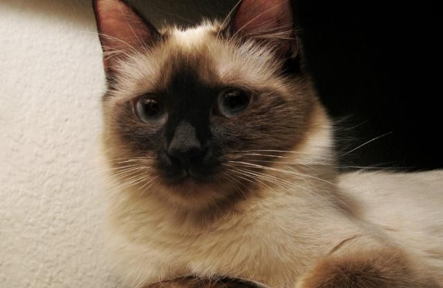
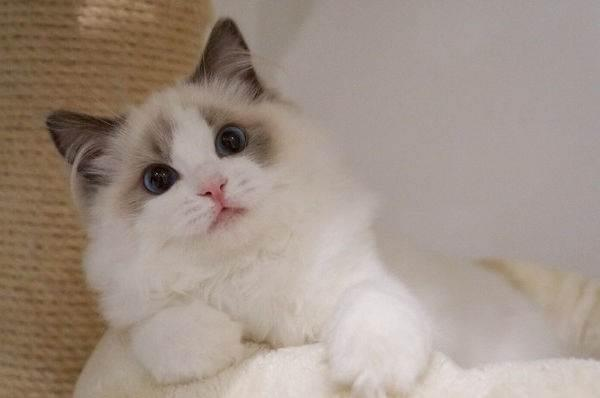
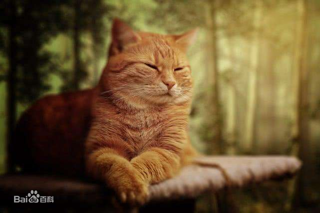

-

暹罗猫
暹（xiān）罗猫是世界著名的短毛猫，也是短毛猫的代表品种。种族原产于暹罗（今泰国），故名暹罗猫。在200多年前，这种珍贵的猫仅在泰国的皇宫和大寺院中饲养，是足不出户的贵族。暹罗猫能够较好适应主人当地的气候，且性格刚烈好动，机智灵活，好奇心特强，善解人意。
-

布偶猫
布偶猫是猫中较大、较重的一种。它的头呈V形，眼大而圆，被毛丰厚，四肢粗大，尾长，身体柔软，多为三色或双色猫。 布偶猫抱起来像软绵绵的布偶，而且对人非常友善。它性格大胆，不知道什么叫恐惧，而且对疼痛的忍耐性相当强，常被误认为缺乏疼痛感，因此很能容忍孩子的玩弄，是非常理想的家庭宠物。
-

橘猫
橘猫（orange cats）是家猫常见的一种毛色，也叫橘子猫、桔猫，普遍存在于混种猫和不具独特规定毛色的注册纯种猫种，与品种无关，与被毛基因有关。国内大部分橘猫都是狸花猫，因此也称为橘狸、黄狸。橘猫是家猫常见的一种猫，普遍存在于混种猫和不具独特规定毛色的注册纯种猫种，与任何品种无关，只与被毛遗传基因有关。